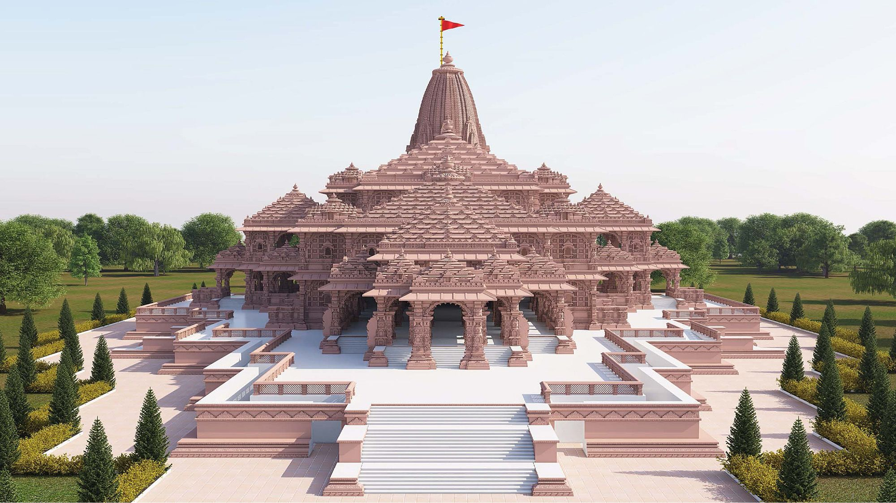

The Ram Lalla idol was unveiled at the Pran Pratishtha ceremony attended by PM Modi, Rashtriya Swayamsevak Sangh (RSS) chief Mohan Bhagwat and Uttar Pradesh Chief Minister Yogi Adityanath. The unveiling happened after the hour-long rituals in the presence of PM Modi who led the ceremony. Meanwhile, hymns, verses and songs about Lord Ram reverberated in temples across the nation.
